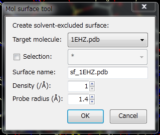
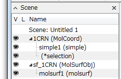
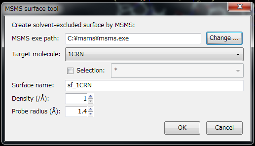

MsmsMolSurface
Creating Molecular Surfaces¶
You can easily create molecular surfaces from the GUI. From version 2.0.1 onwards, CueMol2 can generate molecular surfaces itself.
Execute menu "Tools" → "Mol surface generation ..." to display the following dialog:

Specifying Target Molecule¶
Next, specify the Target molecule. If there is only one molecule in the current scene, no change in specification is needed, but if there are multiple molecules, please specify the molecule for surface creation from the dropdown listbox next to "Target molecule:".
Specifying Selection¶
It's also possible to create surfaces for only part of a molecule. Below Target, there is a "Selection" checkbox. When this is checked, the molecular selection listbox on the right becomes active. (If part of the molecule is already selected, it will be checked from the beginning) For example, if you want to create a surface only for the protein part, select "protein" from the listbox. If you want to create it only for Chain A, enter "chain A".
Molecular objects sometimes contain water molecules, but it's normal to create molecular surfaces without including water. However, since the default is ** (= all selection), surfaces are calculated for all atoms including water and substrates. So, although it's a bit troublesome, please be sure to enter a selection statement that excludes water molecules here.
Other Options¶
Name of Generated Molecular Surface Object¶
The name of the created surface can be specified in the "Surface name:" section. By default, it becomes "sf_" + target molecule name, but you can also specify it directly by typing.
Polygon Fineness¶
Density is the fineness of the created surface. Increasing the value increases fineness. Increased fineness makes surface calculation and loading take more time and consume more memory and disk space.
The default is 1, but for small molecules around 10 kDa, setting it to 5 or higher will create prettier surfaces.
Conversely, for large molecules over 100 kDa, keeping it around 1-2 will be faster.
Probe Radius¶
Probe radius specifies the radius of the probe used when calculating the surface. By default, it's set to 1.4Å, the radius of water molecules, assuming calculation of contact surfaces with aqueous solvents.
Executing Molecular Surface Generation¶
After completing the above settings, press the OK button to execute msms and create a surface object.

In this example, an object (of MolSurfObj type) called sf_1CRN has been created for 1CRN (crambin).
By default, one molsurf renderer is created for the surface object. The target property of the renderer (molecular object name referenced during coloring) is set to the molecular object name used to create the surface, and it's configured for CPKColoring.

{kind=link}
{kind=link}
From this state, you can change the coloring from the Color panel to Paint, CPK (left), Bfac (center), Rainbow (right), and other colorings similar to renderers for other molecules.
For details, refer to Molecular Surface Display.
Generated Surface Object¶
The generated surface object is embedded in binary format in the qsc file when the scene is saved to a qsc file. Therefore, when you start CueMol again and load it next time, the molecular surface should be displayed the same as when saved.
Surface Object Regeneration¶
In CueMol version 2.2.1.330 and later, you can easily regenerate MolSurfObj objects that have been created once with different mesh density.
Right-click on the MolSurfObj you want to regenerate in the Scene panel, and click "Regenerate surface..." in the displayed context menu to show the Mol surface tool dialog above. Change the Density and press the OK button to regenerate the surface with the specified density.
{kind=link}
However, when loading scene files created with older CueMol versions, this function cannot be used because information about the MolCoord object that is the basis of the MolSurfObj object is not saved.
For Version 2.0.0 and Earlier¶
The following is an explanation for Version 2.0.0 and earlier. An external program called msms is required for molecular surface generation.
Installing msms¶
Please download msms from http://mgltools.scripps.edu/downloads#msms For Windows, it's a zip file, so extract it to an appropriate location after downloading. Here, we assume it's extracted under C:\msms (so that c:\msms\msms.exe exists).
In Windows 7, when you run an executable file downloaded from the net, a warning dialog appears. So, run it once to prevent the warning from appearing.
For macOS, for some reason only PowerPC versions seem to be distributed nowadays. Even on Intel machines, it can be run by installing the emulator (Rosetta) that comes with the OS.
Setting msms Executable File¶
After installing msms, start CueMol2 and open an appropriate PDB file.
Next, execute menu "Tools" → "MSMS surface generation ..." to display the following dialog:

First, set the msms executable file in the top part of the dialog. Press the "Change..." button to display a file open dialog, where you specify the msms file you extracted and copied earlier (msms.exe for Windows, msms for macOS or Linux). (The figure above shows the state after specification) Once this setting is done, it will be remembered, so it won't be needed next time.